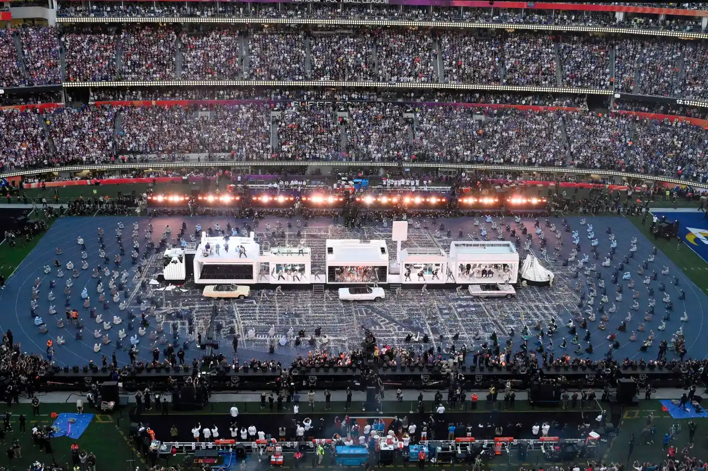
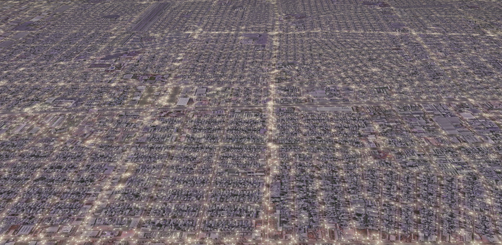

Compton

Compton streetlights⌗
Generating points with PostGIS . . . to approximate streetlight locations in Compton, Los Angeles.
Loose homage to Kendrick Lamar, strong shouts to Snoop, Dre, Mary J., and the map underneath the 2022 Superbowl Halftime Show, and big respect to the L.A. county streetlight spacing guidelines.
 Photo by David Crane, Los Angeles Daily News/SCNG
Get streets data⌗
Openstreetmap, as always, is the perfect starting point for data. From overpass turbo, pull the local street grid as GeoJSON.
/*
This has been generated by the overpass-turbo wizard.
The original search was:
“highway=* and type:way”
*/
[out:json][timeout:25];
// gather results
(
// query part for: “highway=*”
way["highway"]({{bbox}});
);
// print results
out body;
>;
out skel qt;
Download as compton_highway.geojson.
Add to PostGIS⌗
Create a working DB and import the data:
DBURL=compton
dropdb $DBURL --if-exists
createdb $DBURL
psql $DBURL -c "CREATE EXTENSION postgis;"
ogr2ogr \
-f "PostgreSQL" \
PG:"host=localhost dbname=$DBURL" \
compton_highway.geojson \
-t_srs "EPSG:3857" \
-nln still_got_love_for_these_streets \
-lco GEOMETRY_NAME=the_geom \
-nlt PROMOTE_TO_MULTI \
-progress \
-overwrite
Generate streetlight points⌗
. . . using the magic of PostGIS
psql $DBURL -c "
DROP TABLE IF EXISTS kendrick_lights;
CREATE TABLE kendrick_lights AS (
WITH streets AS (
SELECT
-- Set linear light spacing based on CA guidelines
(CASE
WHEN highway LIKE '%motorway%' THEN 200
ELSE 50
END) AS spacing,
-- Pull linestrings from multilinestrings
(ST_Dump(the_geom)).geom AS the_geom
FROM still_got_love_for_these_streets
-- Ignore the polygons from the overpass export
WHERE ST_geometrytype(the_geom) = 'ST_MultiLineString'
),
lolos AS (
SELECT
-- Generative point function
ST_LineInterpolatePoints(
-- Use the outer boundary of a 10m buffer around all streets
ST_ExteriorRing(
ST_Buffer(
the_geom,
10
)
),
-- Only use one point if the street segment is shorter than the class spacing
(CASE
WHEN spacing >= ST_Length(the_geom) THEN 0.5::float
ELSE spacing/(ST_Length(the_geom))::float
END),
true
) AS the_geom
FROM streets
)
SELECT
(ST_Dump(the_geom)).geom AS the_geom
FROM lolos
)
"
Export to GeoJSON⌗
ogr2ogr \
-f "GeoJSON" \
-t_srs "EPSG:4326" \
streetlights.geojson \
PG:"host=localhost dbname=$DBURL" \
"kendrick_lights(the_geom)"
And ta-daaaaa:

Read other posts